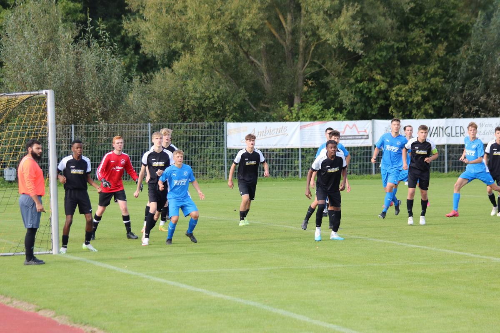

A-Jugend SGM ABI
Am 2.Spieltag begrüßten wir den Regionenstaffel dritten der vergangenen Saison bei uns in Abstatt, zu Gast war der SV Schluchtern. Mit Beginn der Partie war die Begegnung eigentlich recht zerfahren, viele Leichtsinnsfehler prägten das Spiel, so schaffte es Schluchtern in der 6. Minute früh in Führung zu gehen. Die Führung beruhigte aber weder die Spielweise der Gäste noch unsere so schafften wir in der 19. Minute nach einem Fehler der Schluchterner Abwehr durch Philipp auszugleichen. Das Spiel ging jetzt hin und her mit der wahrscheinlich größten Torchance für uns, nach einem Fehler der Schluchterner Verteidigung war es Philipp der den Torspieler umdribbelte, seitlich auf der Grundlinie bekam er den Ball noch, legte den Ball in den Rückraum und wir verschossen. Wenige Minuten später ein Fehler von uns, anstatt den Ball zu Kontrollieren und ruhig das Spiel zu gestalten, reihten sich mehrere missglückte Klärungsversuche aneinander und Schluchtern konnte das 1:2 erzielen, nach dem Gegentreffer gleich der nächste und kurz vor der Halbzeit dann das 1:4 für Schluchtern. Wer denkt, das Ergebnis war unser größtes Problem, der täuschte sich. Zwei Spieler konnten aufgrund von Übelkeit dann das Spiel nicht mehr fortsetzen, Jannis verletzte sich bei einer starken Parade in der ersten Hälfte an der Schulter und spielte 20 Minuten mit starken Schmerzen weiter. Da wir keinen Ersatztorspieler haben, musste ein Feldspieler ins Tor, hier erklärte sich Ryan bereit, der in der zweiten Hälfte ein riesen Spiel als Torspieler machte.
Generell ist die zweite Hälfte einfach zusammen zu fassen, wir hatten nichts mehr zu verlieren und kämpften was das Zeug hält. Schluchtern erspielte sich Chancen durch Konter und war gewillt das Spiel ein wenig zu beruhigen, was wir nicht wirklich zu ließen, Ryan parierte was zu parieren war und unsere Spieler gaben einfach alles, ob es Benni und Flori waren, die dann notgedrungen plötzlich als IV spielten anstatt im Sturm, ob es Aaron und Julius auf den Außenverteidiger Positionen waren oder Enis, Lukas, Fabi und Finn auf 6, Jahir mit Philipp im Sturm oder Eyüp und Andrew auf den Flügelpositionen... wirklich jeder versuchte nochmal alles zu geben und so gelang es uns auch in der 68. Minute das 2:4 durch Eyüp zu erzielen, es war noch genug Zeit, aber die Personalprobleme halfen uns nicht weiter, wir mussten noch zwei mal verletzungsbedingt Wechseln und bei aller Bereitschaft, verließen uns dann leider doch die Kräfte. Der Sieg für Schluchtern war durchaus verdient, da wir in der ersten Hälfte mehr Fehler machten und unsere Gäste diese eiskalt nutzten.
Dennoch und das weiß die Mannschaft, bin ich unheimlich Stolz auf die aufopferungsvolle zweite Hälfte der Jungs ! Nach dem Spiel wurden die Jungs gefragt, wer am nächsten Tag beim E5x5 Spieltag helfen kann und hier zeigt sich der wahre Charakter einer Mannschaft, trotz Niederlage waren 4 Spieler sofort bereit zu helfen, am Sonntag zum Spieltag waren es dann 8 Spieler, die zum Helfen da waren, diese Momente machen einen unheimlich Stolz, die Jungs helfen wann immer es geht, wo immer sie gefragt sind, da sind positive Ergebnisse auf dem Platz schön, aber zweitrangig.
Für unsere SGM ABI waren dabei: Jannis, Romeo, Lukas, Aaron, Julius, Ryan, Finn, Andrew, Enis, Eyüp, Philipp, Jahir, Benni, Flori, Fabi So. und Eric.
Jetzt heißt es erst mal Pause, am Wochenende sind wir aufgrund Rückzug der SGM TG Böckingen Aramäer Heilbronn spielfrei. Am 04.10. steht dann bereits das Achtelfinale im Bezirkspokal an, wir sind zu Gast bei der TSG Heilbronn.